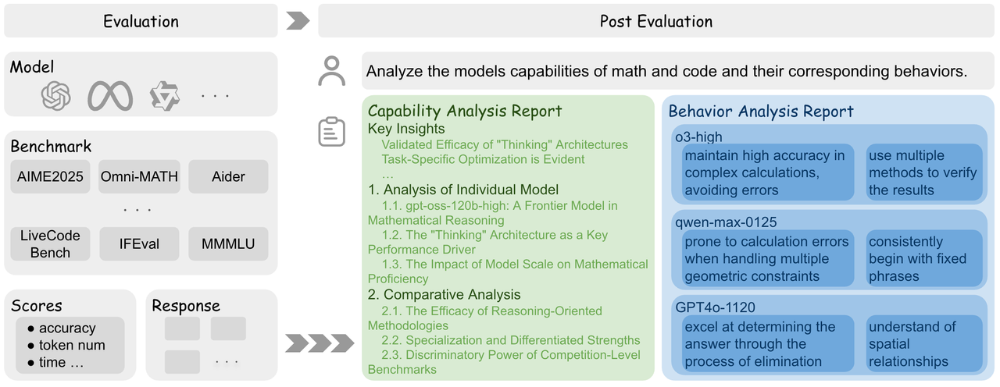

Automated model analytics
Capability & Behavioral Analysis—Just Type a Query
Get two natural-language reports from a single query: a capability analysis and a behavioral analysis—plus deep dives beyond raw performance.

Highlights
Methodology
🔧 Capability Analysis
🧭 Behavioral Analysis
Assets you provide
Tips